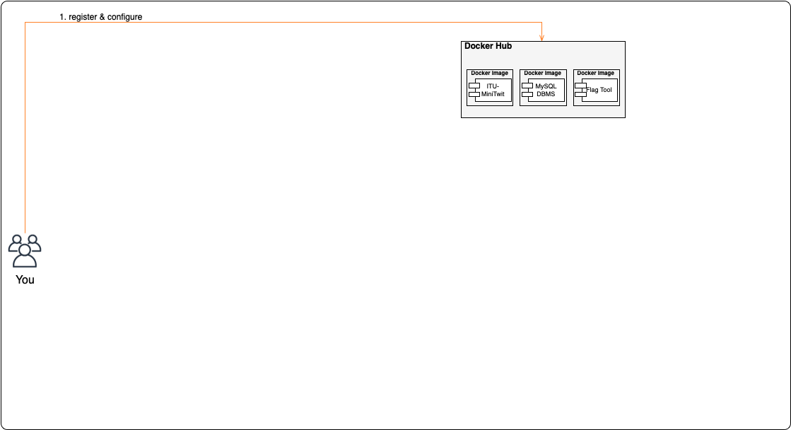
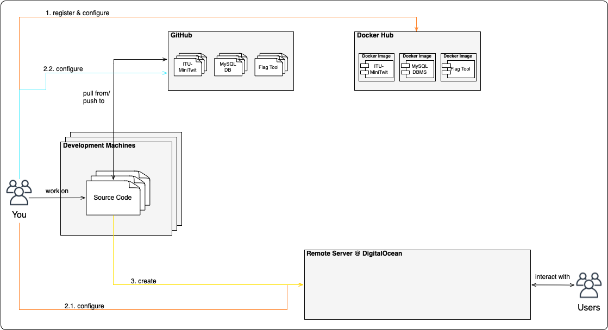
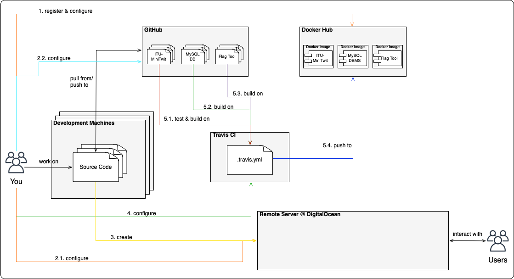
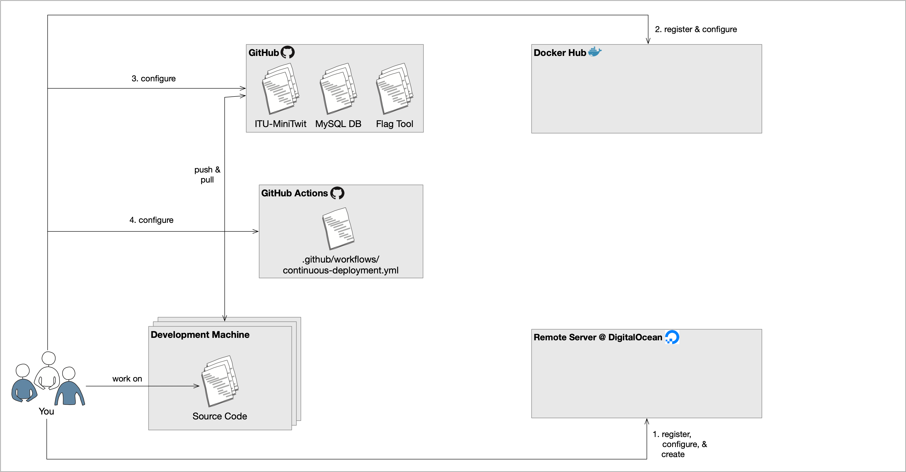
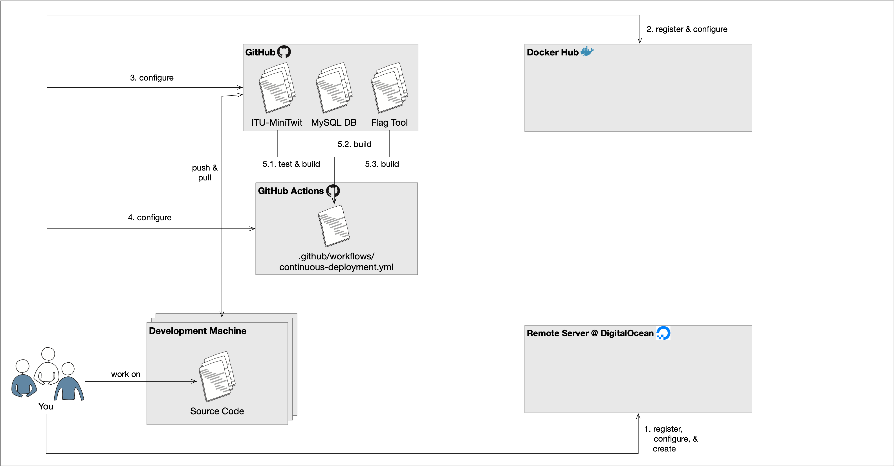
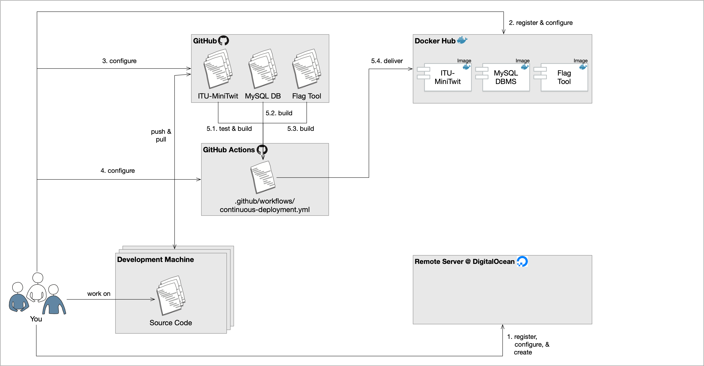

class: center, middle <img src="https://www.saa-authors.eu/picture/739/ftw_768/saa-mtcwmza4nzq5mq.jpg" width=40%/> # DevOps, Software Evolution and Software Maintenance Helge Pfeiffer, Assistant Professor,<br> [Research Center for Government IT](https://www.itu.dk/forskning/institutter/institut-for-datalogi/forskningscenter-for-offentlig-it),<br> [IT University of Copenhagen, Denmark](https://www.itu.dk)<br> `ropf@itu.dk` --- class: center, middle # Feedback --- ### How are you after starting refactoring? --- ### Release Activity <img src="http://138.197.185.85/release_activity_weekly.svg" width="90%"> --- ### Weekly Commit Activity <img src="http://138.197.185.85/commit_activity_weekly.svg" width="90%"> --- ### Lovely that you help each other and me on Teams!!! _ _ _______________ |*\_/*|________ | ___________ | .-. .-. ||_/-\_|______ | | | | | .****. .****. | | | | | | 0 0 | | .*****.*****. | | 0 0 | | | | - | | .*********. | | - | | | | \___/ | | .*******. | | \___/ | | | |___ ___| | .*****. | |___________| | |_____|\_/|_____| .***. |_______________| _|__|/ \|_|_.............*.............._|________|_ / ********** \ / ********** \ / ************ \ / ************ \ -------------------- -------------------- Keep on that good spirit! If you want to, use the channel and each other for help way more --- ### General Advise * **Log** what you have been doing. This makes it easier for the TAs and your group fellows to help you. Also it is a prerequisite to [ask good questions](https://stackoverflow.com/help/how-to-ask) or write good [bug reports](https://www.kenst.com/2018/02/how-to-write-a-good-bug-report-use-rimgen/). * Make sure to **read** each bullet/sentence written in task descriptions. --- ## Questions #### When does it start precisely? Send again a pull request to `repositories.py` in our central repository: https://github.com/itu-devops/lecture_notes/blob/master/repositories.py Add two URL links: * One to your running applications (edit `"http://<minitwit_application_url>"`) * Another one to the simulator API endpoint (edit `"http://<sim_api_url>"`) --- ### Your Turn! - `Task 1` <img src="https://media.giphy.com/media/13GIgrGdslD9oQ/giphy.gif" width=50%/> - How do you build your software currently? - Which steps have to be performed after checking out your repository to create the 'executable' artifact? --- ### Motivation - Building and deploying software can be scary. <img src="http://media.giphy.com/media/DHujNQWc9XjRC/giphy.gif" width="30%"> You can break things, tests will fail, colleagues might get angry, etc. However, an infrastructure that lets you deliver and deploy automatically and continuously may help to reduce those fears that many developers have. It allows you to deploy frequently without any manual intervention. In particular, when things go wrong you just deploy a fix quickly and easily. --- ### How can you build and deploy? * Not at all, I work on the server... * Manually, via SSH/SCP * Via scripted flows * Via build systems --- ### `make` [`make`](https://www.gnu.org/software/make/manual/html_node/) is likely one of the oldest build automation tools. An example of a `Makefile` that builds and deploys a homepage via `rsync`. ```make .PHONY: build serve all deploy build: ./build.sh serve: cd public open index.html python -m http.server all: build git add -A && git commit -m "Automatic deploy commit on `date "+%Y-%m-%d_%H:%M:%S"`" git push origin master rsync -rP public/* me@server.itu.dk:/import/home/me/public_html deploy: build rsync -rP public/* me@server.dk:/import/home/me/public_html ``` A bit more complicated example, the Linux kernel [`Makefile`](https://github.com/torvalds/linux/blob/master/Makefile) --- class: center, middle # How do big companies build and deploy? --- ### GitHub > We are constantly deploying at GitHub. Dozens of times a day. > > Any employee can deploy to production from Campfire with a single message. When someone pushes to master, after watching the tests pass, they're encouraged to immediately deploy to production. This way, everyone is responsible for their own code being production-ready, and people don't have to worry about pushing someone else's code and breaking production. > > Recently, this process got even better. Now, after someone pushes to master and the tests pass, master is deployed to production automatically. We have ways of preventing this from happening (an employee can temporarily lock deployment while they're collecting data, for example), but by default, production is always up-to-date with master. > > This is a fantastic way of doing things. Deploying constantly means we completely avoid giant scary "deployment days", and our fast and painless deployment process means we can quickly fix problems as they're discovered. > > Jake Boxer (https://www.quora.com/How-often-do-major-software-companies-such-as-Github-Facebook-Google-Quora-Pinterest-etc-push-code-to-production-Is-there-any-standard-pattern-of-release-cycle-which-any-company-can-follow) --- ### Amazon > **Amazon May (2011) Deployment Stats (production hosts & environments only)** > > * Mean time between deployments (weekday): 11.6 seconds > * Max # of deployments in a single hour: 1,079 > * Mean # of hosts simultaneously receiving a deployment: 10,000 > * Max # of hosts simultaneously receiving a deployment: * 30,000 > > https://web.archive.org/web/20160305150815/http://assets.en.oreilly.com/1/event/60/Velocity%20Culture%20Presentation.pdf > **Results** > * 75% reduction in outages triggered by software deployments since 2006 > * 90% reduction in outage minutes triggered by software deployments > * ~0.001% of software deployments cause an outage > * Instantaneous automated rollback > * Reduction in complexity You can see the entire talk with these numbers here: http://www.youtube.com/watch?v=dxk8b9rSKOo --- ### Facebook Facebook deploys: * One minor update on most business days * One major update on a weekly basis, usually Tuesdays https://arstechnica.com/information-technology/2012/04/exclusive-a-behind-the-scenes-look-at-facebook-release-engineering/ --- ### Okay, but how can we do this? There are many CI/CD solutions. In our following example we will have a closer look to Travis CI. However, you might consider an alternative technology. The following list should link you to some commonly used solutions. Self-hosted most often in bigger organizations and companies: * [Jenkins](https://jenkins.io/index.html) * [Bamboo](https://www.atlassian.com/software/bamboo) * [TeamCity](https://www.jetbrains.com/teamcity/) * [Concourse](https://concourse.ci) * [Azure DevOps Server](https://azure.microsoft.com/en-us/services/devops/server/) CI/CD as a service: * [Travis CI](https://travis-ci.org/) * [CircleCI](https://circleci.com) * [Github Actions](https://github.com/features/actions) * [Wercker](http://www.wercker.com) --- ### CI/CD System??? > A CI system clones the codebase for the software under consideration from a source control system such as GitHub, builds the software into an artifact that can be a binary, a tar archive, or a Docker image, and, very importantly, also runs unit and/or integration tests for the software. A CD system deploys the artifacts built by the CI system to a target environment. This deployment can be automated for nonproduction environments, but usually includes a manual approval step for production. A more advanced type of such systems is a continuous delivery platform, which automates the deployment step to production and is capable of rolling back the deployment based on metrics obtained from monitoring and logging platforms. > > N. Gift et al. [_"Python for DevOps"_](https://www.oreilly.com/library/view/python-for-devops/9781492057680/) --- ### A CI/CD Example Setup This is a guide on how to setup an example continuous integration (CI) chain using the following technologies and tools: * the distributed version control system (VCS) Git (https://git-scm.com) and GitHub (https://github.com) as host, * the build server service Github Actions (https://github.com/features/actions), * Docker containers (https://www.docker.com) and DockerHub (https://hub.docker.com) as a public artifact registry, * Vagrant (https://www.vagrantup.com) to setup and manage virtual remote machines, * and the cloud server provider Digital Ocean (https://www.digitalocean.com). --- ### Scenario We have the ITU-MiniTwit application. Now, it is using MySQL as DBMS instead of SQLite. The entire application is bundled in Docker images and run as single containers for now. <img src="images/CICD_Setup.png" width="100%"> --- ### Step 1 - Setup Remote VM and Keys  --- ### Step 2 - Setup Artifacts Store  --- ### Step 2 - Setup Artifacts Store Alternatives are: * [Artefactory](https://jfrog.com/artifactory/) * [GitHub Packages](https://github.com/features/packages) * The package store of your programming languages package manager: - [Maven Central Repository](https://search.maven.org/) - [NuGet store](https://www.nuget.org/) - [Python Package Index](https://pypi.org) - [NPM store](https://www.npmjs.com/), etc. * Any of the latter self-hosted * Or perhaps just your VCS repository --- ### Step 3 - Configuring Secrets on GitHub Repository  --- ### Step 4 - Creating and Configuring a Workflow on GitHub Actions <a href="https://github.com/itu-devops/itu-minitwit-ci/blob/master/.github/workflows/continous-deployment.yml"></a> --- ### Step 4 - Creating and Configuring a Workflow on GitHub Actions More on the workflow syntax: https://docs.github.com/en/actions ```yaml --- name: Continuous Deployment on: push: # Run workflow every time something is pushed to the main branch branches: - main - master # allow manual triggers for now too workflow_dispatch: manual: true jobs: build: runs-on: ubuntu-latest steps: - name: Checkout uses: actions/checkout@v2 - name: Login to Docker Hub uses: docker/login-action@v1 with: username: ${{ secrets.DOCKER_USERNAME }} password: ${{ secrets.DOCKER_PASSWORD }} - name: Set up Docker Buildx uses: docker/setup-buildx-action@v1 - name: Build and push minitwitimage uses: docker/build-push-action@v2 with: context: . file: ./Dockerfile-minitwit push: true tags: ${{ secrets.DOCKER_USERNAME }}/minitwitimage:latest cache-from: type=registry,ref=${{ secrets.DOCKER_USERNAME }}/minitwitimage:webbuildcache cache-to: type=registry,ref=${{ secrets.DOCKER_USERNAME }}/minitwitimage:webbuildcache,mode=max - name: Build and push mysqlimage uses: docker/build-push-action@v2 with: context: . file: ./Dockerfile-mysql push: true tags: ${{ secrets.DOCKER_USERNAME }}/mysqlimage:latest cache-from: type=registry,ref=${{ secrets.DOCKER_USERNAME }}/mysqlimage:mysqlbuildcache cache-to: type=registry,ref=${{ secrets.DOCKER_USERNAME }}/mysqlimage:mysqlbuildcache,mode=max - name: Build and push flagtoolimage uses: docker/build-push-action@v2 with: context: . file: ./Dockerfile-flagtool push: true tags: ${{ secrets.DOCKER_USERNAME }}/flagtoolimage:latest cache-from: type=registry,ref=${{ secrets.DOCKER_USERNAME }}/flagtoolimage:flagtoolbuildcache cache-to: type=registry,ref=${{ secrets.DOCKER_USERNAME }}/flagtoolimage:flagtoolbuildcache,mode=max - name: Test minitwit run: | docker build -t $DOCKER_USERNAME/minitwittestimage -f Dockerfile-minitwit-tests . yes 2>/dev/null | docker-compose up -d docker run --rm --network=itu-minitwit-network $DOCKER_USERNAME/minitwittestimage env: DOCKER_USERNAME: ${{ secrets.DOCKER_USERNAME }} - name: Configure SSH run: | mkdir -p ~/.ssh/ echo "$SSH_KEY" > ~/.ssh/minitwit.key chmod 600 ~/.ssh/minitwit.key env: SSH_KEY: ${{ secrets.SSH_KEY }} - name: Deploy to server # Configure the ~./bash_profile and deploy.sh file on the Vagrantfile run: > ssh $SSH_USER@$SSH_HOST -i ~/.ssh/minitwit.key -o StrictHostKeyChecking=no '/minitwit/deploy.sh' env: SSH_USER: ${{ secrets.SSH_USER }} SSH_HOST: ${{ secrets.SSH_HOST }} ``` --- ### Step 5 - Building & Testing the Software  --- ### Step 6 - Delivering the Software  --- ### Step 7 - Deploying the Software <img src="images/CICD_Setup.png" width="100%"> --- ## What to do now? * To prepare for your project work, practice with the [exercises](./README_EXERCISE.md) * Do the [project work](./README_TASKS.md) until the end of the week * And [prepare for the next session](../session_05/README_PREP.md) --- ## Guest Lecture: [Zander](https://www.eficode.com/blog/author/zander-havgaard) from [Eficode](https://www.eficode.com) <img src="https://www.eficode.com/hs-fs/hubfs/Eficode%202020%20site%20images/People/zander.jpeg" width="40%">